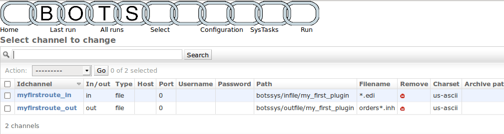

The setup in my_first_plugin
Look at the configured route
To view the route configured: bots-monitor->Configuration->Routes
This will look like:

A route tells bots what to do: where to get the edi-files, what type of files these
are (this determines the translation done), and where to put the translated edi-files..
One route is configured, called 'myfirstfoute'.
The route uses communication channel 'myfirstroute_in' to get incoming
edi-files.
These are edifact format: fromeditype=edifact,
frommessagetype=edifact.
Bots will figure out the exact messagetype (like ORDERSD96AUN) by
itself.
The translated edi-files (fixed format) go to communication channel
myfirstroute\_out.
View the communication channels
To view the communication channels configured:
bots-monitor->Configuration->Channels
This will look like:

A communications channel communicates edi-files in or out of bots.
There are different types of channels, eg: file, ftp, smtp, pop3, etc.
In this plugin 2 routes are configured. Both are type file:
all reading and writing is to file system.
There is one in-channel and one out-channel.
Channels for file-system require a path and a filename.
The translations in this configuration
To view the translations configured:
bots-monitor->Configuration->Translations
This will look like:
 There is
one translation configured.
There is
one translation configured.
This translation translates edi messages of editype edifact and
messagetype ORDERSD96AUNEAN008 using mappingscript
myfirstscriptordersedi2fixed to edi messages of editype fixed and
messagetype ordersfixed.
Each messagetype has a grammar which
describes the message: records, fields, formats. The grammar is a file;
you can find it in:
C:\Python27\Lib\site-packages\bots\usersys\grammars\fixed
The mapping script does the actual
translation; basically it gets data from the incoming message and puts
the data in the outgoing message.
The mapping script is a file; you can find it in:
C:\Python27\Lib\site-packages\bots\usersys\mappings\edifact